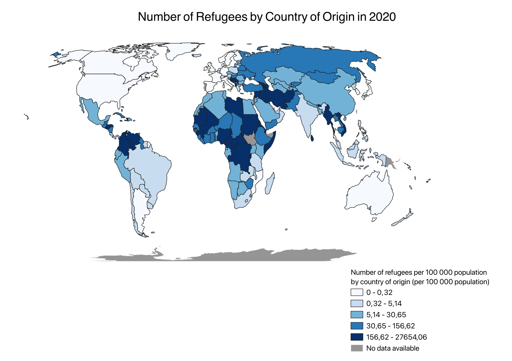

SDG 10.7.4 Choropleth Map
The Assignment
The aim of this assignment is to create a choropleth map using one of the United Nations Sustainable Development Goals (SDGs) indicator data and QGIS. A choropleth map is defined as a thematic map that uses color, shades or patterns to depict a specific value and subsenquently fill a geographical area. This type of map offers simplicity and clarity: by mapping SDG indicators through a choropleth map, we can identify trends and patterns that may not be as clear from raw data and use this knowledge to inform policy and decision making.
The SDG indicator 10.7.4 is part of SDG 10, “Reduced Inequalities” and its 7th target, which is to “Facilitate orderly, safe, regular and responsible migration and mobility of people, including through the implementation of planned and well-managed migration policies”. I compared it to SDG indicator 10.7.2, which measures the number of countries with migration policies that facilitate orderly, safe, regular, and responsible migration and mobility of people. This includes policies covering aspects of migration management such as labor migration, family reunification, and protection of refugees.
Data Collection
Global data was obtained from Blackboard to form the world map, and SDG indicator data was obtained from the UN Stats Open SDG Data Hub to depict variations in SDG indicator 10.7.4 across countries. For the map on open migratory policies, I used an already published Esri Online map.
The Process
1. Cleaned SDG indicator data from 2000-2014 in QGIS for easier processing and fewer errors.
2. Joined two sets of data in QGIS and exported them as one layer.
3. Selected only the 2020 data to highlight the latest SDG indicator developments.
4. Classified the data in natural intervals to maintain original formatting.
5. Modified colors to appear impartial.
6. Changed the projection to Eckert IV World for alignment with SDG indicator data.
7. Published the map online using Esri Online for increased reach and interactivity with a slider.
What can be seen
- Parts of Sub-Saharan Africa and Northern Africa have the highest proportional number of refugees
- Many countries have not submitted data for SDG indicator 10.7.2, requiring further research to understand the relationship between the number of refugees and the country's migratory policies
- Very few countries fully meet the SDG indicator 10.7.2 requirements
- Most countries with middle to high numbers of refugees partially meet or meet the requirements for SDG indicator 10.7.2, indicating that countries with substantial refugee populations may have more policies designed to facilitate the integration and protection of these refugees.
Feedback
From students and instructor